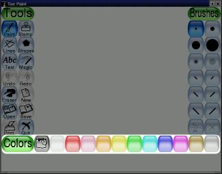
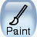
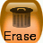
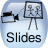

версия
0.9.16
Простая программа рисования для детей
Copyright 2002-2006 by Bill Kendrick and others
New Breed Software
bill@newbreedsoftware.com
http://www.newbreedsoftware.com/tuxpaint/
14 июня 2002-9 сентября 2006
Copyright 2002-2006 by Bill Kendrick and others
New Breed Software
bill@newbreedsoftware.com
http://www.newbreedsoftware.com/tuxpaint/
14 июня 2002-9 сентября 2006
Что такое 'Tux Paint'?
Tux Paint — свободно распространяемая программа для рисования, разработанная для детей младшего возраста (от 3 лет и старше). Программа отличается простым, лёгким в использовании интерфейсом, занимательными звуковыми эффектами. Рисованный персонаж (пингвин Тукс) поможет детям освоить программу. Холст и набор инструментов для рисования помогут развить творческие способности Вашего ребёнка.
Лицензия:
Tux Paint — бесплатно распространяемое программное обеспечение с открытым исходным кодом. Лицензирован под GNU General Public License (GPL). Открытость исходного кода позволяет сторонним разработчикам добавлять функции, исправлять ошибки и использовать части программы в своих собственных программах, выпущенных под лицензией GPL.
Смотри полный текст лицензии GPL в файле COPYING.txt .
Особенности:
- Лёгкость в освоение и занимательность
- Tux Paint задуман как программа рисования для детей младшего возраста. Она не предназначена для использования в качестве основной программы компьютерной графики. Таким образом, лёгкость в освоении и занимательность являются базовым требованием. Звуковые эффекты и рисованный персонаж помогут в освоении программы и развлекут пользователя. Также предусмотрены крупные, в мультипликационном стиле, указатели мыши.
- Расширяемость
- Tux Paint расширяем. Кисти и штампы могут добавляться и удаляться. Например, учитель может добавить коллекцию изображений животных и дать учащимся задание изобразить экосистему. Каждой форме может быть приписан звук и текстовый комментарий, показываемый, когда ребёнок выбирает форму.
- Переносимость
- Tux Paint переносим между различными компьютерными платформами: Windows, Macintosh, Linux и т.д. Интерфейс при этом выглядит одинаково. Tux Paint хорошо работает на старых системах (таких как Pentium 133) и может быть скомпилирован для работы на медленных системах.
- Простота
- Ребёнку не приходится напрямую иметь дело с низкоуровневыми компьютерными функциями. Текущий рисунок сохраняется при выходе из программы и появляется при последующем запуске. При сохранении рисунка не требуется давать наименование или использовать клавиатуру. Открытие рисунка производится путём выбора из галереи миниатюр. Доступ к другим файлам на компьютере закрыт.
Запуск Tux Paint
Для пользователей Linux/Unix
Ярлык запуска Tux Paint следует разместить в меню рабочего стола KDE и/или GNOME в подразделе "Графика".
Другой способ — использование следующей команды оболочки:
$ tuxpaintПри возникновении ошибок, они будут выведены на терминал (в "stderr").
Для пользователей Windows
Tux PaintЕсли Вы устанавливаете Tux Paint на компьютер с использованием инсталлятора, Вам будет задан вопрос, желаете ли Вы создать ярлык в меню "Пуск" и/или на рабочем столе. В случае Вашего согласия, Вы можете запустить Tux Paint из раздела "Tux Paint" меню "Пуск" или двойным щелчком на иконке рабочего стола.
Если Вы установили Tux Paint из ZIP-архива или отказались от создания ярлыков, для запуска программы следует выполнить двойной щелчок по иконке "
tuxpaint.exe" папке "Tux Paint" на Вашем компьютере.По умолчанию инсталлятор создаёт папку "Tux Paint" по адресу
C:\Program Files\, хотя Вы можете задать любое другое местоположение.Если Вы использовали установку из ZIP-архива папка "Tux Paint" будет расположена там, куда Вы распаковали архив.
Для пользователей Mac OS X
Просто выполните двойной щелчок по иконке Tux Paint.
Заставка
При запуске Tux Paint вначале появляется заставка.
По завершению загрузки нажмите любую клавишу или сделайте щелчок мышью для продолжения. (Либо после 30 секунд заставка исчезнет автоматически.)
Главный экран
Главный экран программы делится на следующие секции:
- Слева: Панель инструментов
Панель инструментов содержит инструменты для рисования и редактирования.
- В центре: Холст для рисования
Самая большая секция, в центре экрана, — холст для рисования. Как нетрудно догадаться, здесь Вы рисуете!
- Справа: Панель выбора
В зависимости от текущего инструмента, панель выбора показывает различные объекты, например, когда выбран инструмент "Краска", панель показывает доступные кисти. Когда выбран "Штамп", панель показывает формы, которые Вы можете использовать.
- Ниже холста: цвета
Палитра доступных цветов показана под холстом.

(Примечание: Вы можете определять свои собственные цвета для Tux Paint. Смотри "Настройки".)
- Внизу: Строка-подсказка
В самом низу экрана Тукс, пингвин — символ Linux, выводит советы и другую информацию во время рисования.
Инструменты
Инструменты для рисования
- Краска
- 
Этот инструмент позволяет Вам рисовать вручную, используя различные кисти (выбранные на панели выбора справа) и цвета (выбранные в палитре внизу).
Нажмите на кнопку мыши и двигайте мышь, как если бы Вы рисовали кистью на бумаге.
Пока Вы рисуете, проигрывается звук. Чем больше кисть, тем ниже тон.
- Штамп

Инструмент "Штамп" действует как резиновый штамп или наклейка. Он позволяет вставлять в Ваш рисунок готовые картинки или фотографии (например, изображение лошади, или дерева, или луны).
Во время движения мыши, за ней движется контур выбранного штампа, показывая, где будет вставлен штамп.
К штампам могут быть привязаны звуковые эффекты. У некоторых штампов можно изменить цвет или оттенок.
Размеры штампа можно изменять, а также многие штампы можно перевернуть или зеркально отразить, используя элементы управления внизу справа.
(Примечание: если установлена опция "
nostampcontrols", Tux Paint не показывает элементы управления "Зеркало", "Переворот", "Уменьшение и увеличение" для штампов. Смотри "Настройки".)
- Линии

Этот инструмент позволяет рисовать прямые линии, применяя те же кисти и цвета, что и при использовании инструмента "Кисть".
Нажмите на кнопку мыши для выбора начальной точки линии. При движении мыши появится тонкая полоска, показывающая, где будет отрисована линия.
Отпустите кнопку мыши, чтобы завершить линию. Послышится звук лопнувшей струны.
- Формы

Этот инструмент позволяет рисовать различные закрашенные или незакрашенные простые фигуры.
Выбирите фигуру на панели выбора справа (круг, квадрат, овал и т.д.).
Нажмите кнопку мыши и, удерживая её, растяните фигуру до нужного размера. Некоторые фигуры могут изменять пропорции (например, прямоугольник или овал), другие — нет (например, квадрат или круг).
- Стандартный режим
Теперь Вы можете двигать мышью, чтобы вращать фигуру.
Ещё раз щёлкните мышью и фигура будет отрисована в текущем цвете.
- Простой режим
- Если выбран простой режим (например, путём выставления опции "
--simpleshapes"), фигура будет отрисована, когда Вы отпустите кнопку мыши (без операции вращения).
- Текст
Выбирите шрифт (из "букв" на панели справа) и цвет (из палитры внизу). Щёлкните на экране — появится курсор. Теперь можете печатать текст на экране.
Нажмите [Enter] или [Return] — текст будет внедрён в картинку, а курсор опустится на одну строку вниз.
Щёлкните на любом месте рисунка — курсор переместится на место щелчка — можете продолжать ввод текста с этого места.
- Магия (специальные эффекты)

Инструмент "Магия" фактически представляет собой набор специальных инструментов. Выбирите один из "волшебных" эффектов на панели справа, затем нажмите и поводите мышью по картинке, чтобы применить эффект.
- Радуга
- Похоже на рисование кистью, но при этом чередуются все цвета радуги.
- Искры
- Рисует блестящие искры.
- Зеркало
- Когда вы щёлкаете мышью при выбранном эффекте "Зеркало", происходит зеркальное отражение всей картинки.
- Переворот
- Действует подобно "Зеркалу". Щёлкните и вся картинка перевернётся вверх ногами.
- Размывание
- Размывает картинку там, где Вы проведёте мышью.
- Пятна
- Смазывает цвета, где Вы провели мышью, так как если бы провести пальцем по невысохшей краске.
- Светлее
- Осветляет цвета там, где Вы провели мышью. (Если применить этот эффект к одному участку рисунка много раз, в конце концов он станет белым.)
- Темнее
- Затемняет цвета там, где Вы провели мышью. (Если применить этот эффект к одному участку рисунка много раз, в конце концов он станет чёрным.)
- Мел
- Придаёт части рисунка (где Вы провели мышью) вид нарисованного мелом.
- Кирпичи
- Рисует кирпичи там, где Вы провели мышью.
- Негатив
- Обращает цвета там, где Вы провели мышью (например, белый становится чёрным и наоборот).
- Изменить цвет
- Смешивает цвет части картинки с выбранным цветом.
- Капанье
- Заставляет рисунок "капать" там, где Вы провели мышью.
- Мультфильм
- Делает рисунок, там, где Вы провели мышью, похожим на картинку из мультфильма: жирные линии контуров и резкие цвета.
- Заполнить
- Заливает картинку выбранным цветом. Позволяет быстро раскрашивать части рисунка.
- Ластик

Работа с этим инструментов напоминает работу с "Краской". Там, где Вы щёлкниете (или нажмёте и протащите) мышью, рисунок стирается до белого или до фоновой картинки, если Вы начали текущий рисунок с "начальных" изображения.
Доступны различные размеры ластика.
Во время движения мыши за указателем следует контур квадрата, показывающий, какая часть рисунка будет стёрта.
При использовании ластика раздаётся соответствующий "писклявый" звук.
Прочие элементы управления
- Откат

Щелчок по этому инструменту отменяет последнее действие. Доступна отмена более, чем одного действия!
Примечание: также Вы можете нажать [Control]-[Z] на клавиатуре для отката.
- Возврат

Щелчок по этому инструменту возвращает последнее действие, отменённое с помощью кнопки "Откат".
Вы можете возвратить столько действий, сколько отменили, но лишь если после отмены Вы не рисовали!
Примечание: также Вы можете нажать [Control]-[R] на клавиатуре для возврата.
- Новая

При нажатии на кнопку "Новая" создаётся новый рисунок. Предварительно будет задан вопрос, действительно ли Вы желаете начать новую картинку.
Примечание: также Вы можете нажать [Control]-[N] на клавиатуре, чтобы создать новый рисунок.
- Открыть
При нажатии на эту кнопку открывается список всех рисунков, которые Вы сохранили. Если их больше, чем может поместиться на экране, используйте стрелки "Вверх" и "Вниз" вверху и внизу списка для прокрутки.
Щёлкните на рисунке, чтобы выбрать его, затем...
"Начальные" изображения

Щёлкните на зелёной кнопке "Открыть" в левом нижнем углу, чтобы загрузить выбранную картинку.
(Другой способ загрузки — двойной щелчок но миниатюре картинки.)
- 
Щёлкните по красной кнопке "Удалить" (мусорная корзина) в нижнем правом углу, чтобы удалить выбранную картинку. (У Вас будет запрошено подтверждение).
- 
Щёлкнитек по голубой кнопке "Слайды" (проектор) в нижнем левом углу, чтобы запустить режим показа слайдов. Подробности смотри в разделе "Слайды", ниже.

Или щёлкните по голубой со стрелкой кнопке "Назад" в нижнем правом углу, чтобы завершить просмотр и вернуться к картинке, которую Вы рисуете.
Кроме рисунков, созданных Вами, Tux Paint предоставляет "начальные" изображения. Открытие "начальной" картинки равнозначно созданию нового рисунка, но при этом холст не будет пустым. "Начальное" изображение можно сравнить со страницей в книжке-раскраске (чёрно-белые контуры, которые можно раскрасить) или с фотографией, к которой Вы можете пририсовывать свои изображения.
В галерее рисунков "начальные" изображения выделены зелёным фоном (обычные рисунки — на голубом фоне). Если Вы загрузите "начальную" картинку, а потом нажмёте "Сохранить", будет создат новый рисунок (оригинал сохраниться неизменным, Вы можете использовать его вновь).
Если Вы попытаетесь открыть картинку, не сохранив текущий рисунок, появиться окошко с вопросом о необходимости сохранения рисунка. (Смотри "Сохранить" ниже.)
Примечание: также Вы можете нажать [Control]-[O] на клавиатуре для вызова диалога открытия.
- Сохранить
Сохраняет текущий рисунок.
Если рисунок не был сохранён ранее, будет создан новый пункт в списке сохранённых изображений (т.е., будет создан новый файл).
Примечание: никакие вопросы при сохранении не задаются (в том числе, про имя файла). Картинка просто сохраняется и звучит звук спускаемого затвора фотокамеры.
Если Вы УЖЕ сохраняли картинку ранее, или загрузили рисунок с помощью команды "Открыть", Вам будет задан вопрос, желаете ли Вы заменить старую картинку или создать новую (новый файл).
(Примечание: если выставлена опция "
saveover" или "saveovernew" этот вопрос перед сохранением задаваться не будет. Смотри "Настройки".)Примечание: также Вы можете нажать [Control]-[S] на клавиатуре для сохранения.
- Печать
Нажмите на эту кнопку и Ваш рисунок будет распечатан!
На большинстве платформ Вы также можете удерживать клавишу [Alt] при нажатии на кнопку "Печать" для вызова диалога печати, если только Вы не запустили Tux Paint в полноэкранном режиме. Смотри ниже.
- Запрет печати
Если установлена опция "noprint" (либо указанием "
noprint=yes" в конфигурационном файле Tux Paint, либо использованием "--noprint" в командной строке), кнопка "Печать" будет недоступна.Смотри "Настройки".
- Ограничение печати
Если используется опция "printdelay" (либо указанием "
printdelay=SECONDS" в конфигурационном файле, либо использованием "--printdelay=SECONDS" в командной строке), Вы можете печатать только каждые SECONDS секунд.Например, с "
printdelay=60", Вы можете печатать только раз в минуту.Смотри "Настройки".
- Команды печати
(только для Linux и Unix)
Tux Paint осуществляет печать путём генерации PostScript представления рисунка и пересылки его внешней программе. По умолчанию используется:
lprЭта команда может быть заменена установкой значения параметра "printcommand" в конфигурационном файле Tux Paint.
Если ужерживается клавиша [Alt] во время щелчка по кнопке печати и Вы не находитесь в полноэкранном режиме, запускается альтернативная программа. По умолчанию это диалог печати KDE:
kprinterЭта команда может быть заменена установкой значения параметра "altprintcommand" в конфигурационном файле Tux Paint.
Информацию по изменению команд печати смотри в документе "Настройки".
- Настройки принтера
(только для Windows)
По умолчанию при нажатии на кнопку "Печать" Tux Paint просто печатает на принтере по умолчанию с установками по умолчанию.
Однако, удерживая на клавиатуре клавишу [Alt] во время нажатия на кнопку "Печать", если только Вы не в полноэкранном режиме, Вы вызовете диалог печати Windows, где можно поменять настройки.
Вы можете сохранять изменения в конфигурации принтера с помощью опции "printcfg", либо используя "
--printcfg" в командной строке, либо установив "printcfg=yes" в конфигурационном файле Tux Paint ("tuxpaint.cfg").Ели опция "printcfg" используется, настройки принтера загружаются из файла "
print.cfg", расположенного в Вашей персональной папке (см. ниже). Также будут сохранены любые изменения.Смотри "Настройки".
- Настройки диалога печати
По умолчанию, Tux Paint показывает диалог печати (или, в Linux/Unix, запускает "altprintcommand", например, "kprinter" вместо "lpr"), только если во время нажатия на кнопку "Печать" удерживается клавиша [Alt].
Однако, Вы можете изменить поведение программы. Вы можете настроить автоматическое (без удержания [Alt]) появление диалога печати, используя "
--altprintalways" в командной строке, или "altprint=always" в конфигурационном файле Tux Paint. Или Вы можете полностью запретить (даже при нажатой [Alt]) вызов диалога печати, используя "--altprintnever" или "altprint=never".Смотри "Настройки".
- Слайды
Кнопка "Слайды" доступна в диалоге "Открыть". Она показывет список сохранённых файлов, как и диалог "Открыть", но без "начальных" изображений.
Щёлкная по опрелённым рисункам, Вы отбираете их для просмотра в режиме слайд-шоу — один за другим. Цифра над каждым рисунком позволяет понять, в каком порядке они будут показываться.
Вы можете щёлкнуть по отобранному рисунку, чтобы снять выделение (выбросить его из слайд-шоу).
Шкала в нижнем левом углу экрана (следующая после кнопки "Запуск") используется для регулирования скорости смены слайдов от самой медленной до самой быстрой. Выберите крайне левую позицию на шкале, чтобы запретить автоматическую смену слайдов; Вам потребуется нажимать на какую-либо клавишу или щёлкать мышью, чтобы перейти к следующему слайду (см. ниже).
Когда Вы будете готовы, нажмите кнопку "Запуск", чтобы начать слайд-шоу. (Примечание: если Вы не выделили НИ ОДИН рисунок, ВСЕ рисунки будут включены в слайд-шоу).
Во время слайд-шой нажмите [Пробел], [Enter] или [Return], или [Стрелка вправо], или щёлкните по кнопке "Следующий" в нижнем левом углу, чтобы вручную переместиться на следующий слайд. Нажмите [Влево], чтобы вернуться на предыдущий слайд.
Нажмите [Escape] или щёлкните кнопку "Назад" в нижнем правом углу для выхода из слайд-шоу и возвращения к экрану выбора салйдов.
На экране выбора слайдов нажмите "Назад", чтобы вернуться в диалог "Открыть".
- Выйти

Шёлкнув по кнопке "Выйти", закрыв окно Tux Paint'а, или нажав клавишу [Escape], Вы завершите программу Tux Paint.
При этом откроется предупреждение с вопросом, действительно ли Вы желаете завершить работу.
В случае подтверждения, и если Вы не сохранили текущий рисунок, Вам будет предложено сохранить его. Если это не новый рисунок, Вам будет предложено выбрать между перезаписью старой версии или созданием нового файла (см. "Сохранить" выше.)
Примечание: сохранённый рисунок будет загружен автоматически при следующем запуске Tux Paint!
Примечание: Кнопка "Выйти" и клавиша [Escape] могут быть недоступны (например, при выборе пункта "Disable 'Quit' Button" в программе настройки Tux Paint Config. или при запуске Tux Paint из командной строки с параметром "
--noquit").В этом случае, для выхода можно использовать кнопку закрытия окна (в оконном режиме) или сочетание клавиш [Alt] + [F4].
Если ни один из этих способов недоступен, для выхода используйте сочетание клавиш [Shift] + [Control] + [Escape] (см. "Настройки").
- Отключение звука
Кнопки отключения звука нет, но отключать и включать звуковые эффекты можно нажатием [Alt] + [S].
Если звуки отключены полностью (например, если убрана галочка с пункта "Enable Sound Effects" программе настройки Tux Paint Config или при запускеTux Paint из командной строки с параметром "
--nosound"), нажатие [Alt] + [S] не даёт эффекта (т.е. не может быть использовано для включения звуков, когда родитель/учитель не желают этого).
Диалог "Открыть" показывает только рисунки, созданные Вами в Tux Paint'е, а как быть, если Вы желаете загрузить иные рисунки или фотографии в Tux Paint для редактирования?
Чтобы сделать это, Вам просто нужно конвертировать рисунок в формат PNG (Portable Network Graphic) и поместить его в каталог Tux Paint'а для сохранённых рисунков:
- Windows
- В папке "
Application Data" пользователя, например:"C:\Documents and Settings\(имя пользователя)\Application Data\TuxPaint\saved\"- Mac OS X
- В папке "
Library" пользователя:"/Users/(имя пользователя)/Library/Application Support/Tux Paint/saved/"- Linux/Unix
- В скрытой папке "
.tuxpaint", расположенной в домашней папке пользователя: "$(HOME)/.tuxpaint/saved/"С помощью '
tuxpaint-import'Пользователи Linux и Unix могут применить сценарий оболочки "
tuxpaint-import", который устанавливается при установке Tux Paint. Сценарий использует средства NetPBM для конвертации изображения ("anytopnm"), подгонки размеров под холст Tux Paint'а ("pnmscale"), и преобразования его в формат PNG ("pnmtopng").Он также использует команду "
date" для получения текущего времени и даты, необходимых для формирования имени файла рисунка. (Помните, Вас никогда не спрашивают об имени файла при сохранении или открытии рисунков!)Для использования '
tuxpaint-import', просто выполните команду из командной строки и укажите имя(имена) файла(ов), которые Вы желаете конвертировать.Они будут конвертированы и помещены в каталог Tux Paint для сохранённых рисунков. (Примечание: если Вы проделывете эту операцию для другого пользователя, например, для Вашего ребёнка, убедитесь, что запустили команду под его учётной записью.)
Пример:
$ tuxpaint-import grandma.jpg
grandma.jpg -> /home/username/.tuxpaint/saved/20020921123456.png
jpegtopnm: WRITING A PPM FILEПервая строка ("
tuxpaint-import grandma.jpg") — команда на запуск сценария. Следующие две строки — это выход программы.Теперь Вы можете запустить Tux Paint, и рисунок будет доступен в диалоге "Открыть". Просто выполните двойной щелчок по иконке!
Как это сделать вручную
Пользователи Windows, Mac OS X и BeOS должны выполнять конвертацию вручную.
Запустите графическую программу, способную работать с Вашим изображением и сохранять его в формат PNG. (Смотри в файле документации "PNG.txt" список поддерживаемых программ, а также другие ссылки.)
Уменьшите размер рисунка так, чтобы он был не шире 448 пикселов и не выше 376 пикселов (т.е., максимальный размер 448 x 376 пикселов).
Сохраните рисунок в формате PNG. Настоятельно рекомендуется давать имя, используя текущую дату и время, как то предусмотрено конвенцией Tux Paint:
YYYYMMDDhhmmss.png
- YYYY = Год
- MM = Месяц (01-12)
- DD = День (01-31)
- HH = Час, в 24-часовом формате (00-23)
- mm = Минут (00-59)
- ss = Секунд (00-59)
например:
20020921130500— для 21 сентября 2002 года, 13 ч. 05 мин. 00 сек.Поместите файл PNG в папку Tux Paint для сохранённых рисунков. (Смотри выше.)
Прочая документация, включённая в дистрибутив Tux Paint (в папке "docs"):
- AUTHORS.txt
Список авторов и участников- CHANGES.txt
Обзор изменений между версиями- COPYING.txt
Лицензия (The GNU General Public License)- INSTALL.txt
Инструкции по компиляции/установке- EXTENDING.html
Детальные инструкции по созданию кистей, штампов и "начальных" изображений, добавлению шрифтов.- OPTIONS.html
Детальные инструкции по параметрам командной строки и редактированию файла конфигурации, для тех, кто не желает использовать Tux Paint Config.- PNG.txt
Замечания по созданию изображений в формате PNG для Tux Paint
Если Вам требуется помощь, пожалуйста, свяжитесь с New Breed Software:
http://www.newbreedsoftware.com/Вы также можете присоединиться к многочисленным спискам рассылки Tux Paint:
http://www.newbreedsoftware.com/tuxpaint/lists/
![[Заставка]](../../html/images/tuxpaint-title.jpg)
![[Инструменты: Краска, Штамп, Линии, Формы, Текст, Магия, Откат, Возврат, Ластик, Новая, Открыть, Сохранить, Печать, Выйти]](../../html/images/tools.jpg)
![[(Холст)]](../../html/images/canvas.jpg)
![[Панель выбора — кисти, шрифты, фигуры, штампы]](../../html/images/selector.jpg)